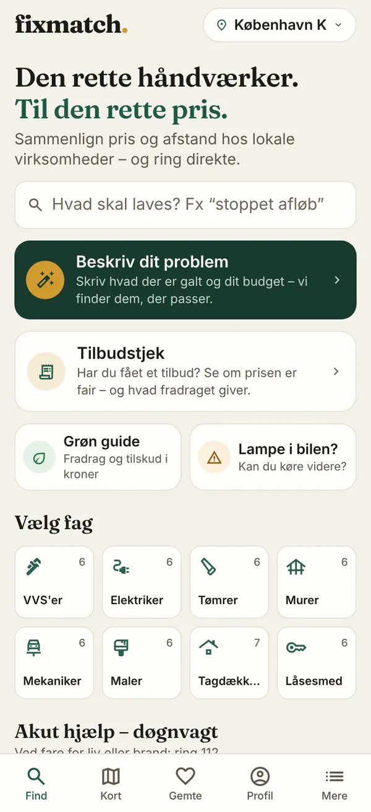
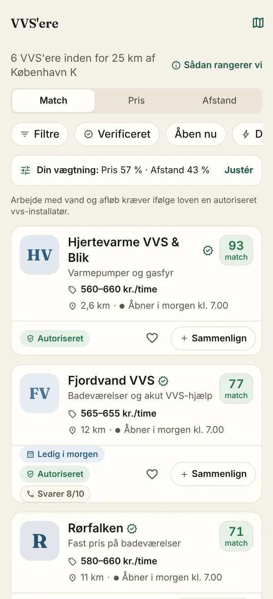
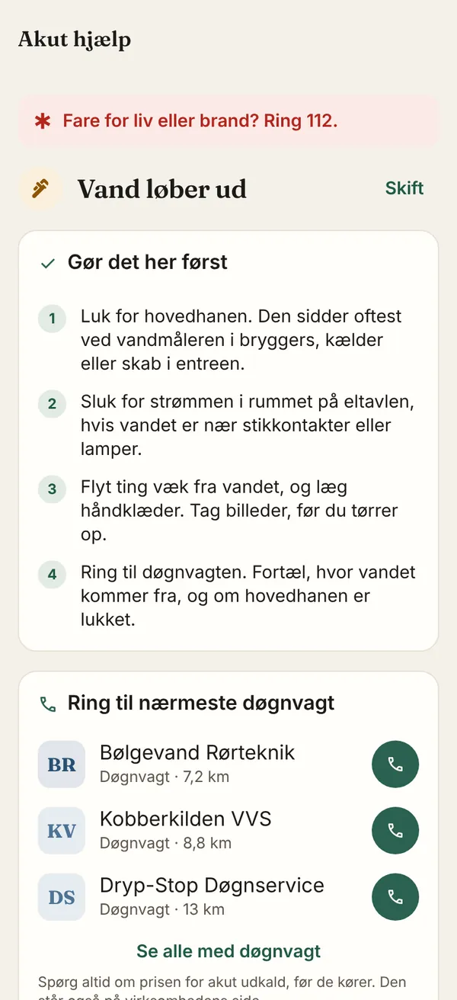

Når vandhanen drypper, eller bilen larmer, ved de fleste ikke, hvem de skal ringe til, hvad det bør koste, eller om firmaet er til at stole på. 12 % af boligejerne har dårlige erfaringer med håndværkere, og ankenævnene fik 1.156 klager over håndværkere i 2022 [1].
FixMatch er en iPhone-app, hvor man ser prisen, før man ringer. Den sammenligner lokale håndværkere og værksteder på pris, afstand og anmeldelser fra rigtige kunder. Man ringer direkte til firmaet. Der er ingen mellemled, ingen gebyr pr. kunde og ingen betalte placeringer. Vores niche er Tilbudstjek: Man tager et billede af et tilbud og får at vide, om prisen er lav, normal eller høj. Det gør ingen danske konkurrenter.
Appen er bygget og testes i TestFlight. Den har 8 fag, over 20 funktioner, en hjemmeside og en server i EU. Brugerne betaler aldrig. Indtægterne kommer fra et frivilligt Pro-abonnement for virksomheder. Vi starter i København og går derefter videre til resten af Danmark og Norden.
Problemet. At finde en håndværker tager tid og er usikkert. På tilbudsportaler som 3byggetilbud.dk kender man først prisen, når tilbuddene kommer, og håndværkerne betaler for hver kunde [2]. CVR, autorisation og garantiordning skal tjekkes på hver sin hjemmeside. Samtidig steg håndværkerpriserne 4,3 % i 2025 [3], så mange ved ikke, hvad en fair pris er.
Ideen. FixMatch samler det hele i én app. Man vælger et fag eller beskriver problemet og sit budget med egne ord. Appen viser de lokale firmaer, der passer, med timepris, typiske priser, afstand og anmeldelser. Med ét tryk ringer man direkte til dem.



Værdien. Med Value Proposition Canvas har vi koblet kundens problemer (pains) til appens funktioner:
| Kundens problem | Sådan løser FixMatch det |
|---|---|
| Ved ikke, om prisen er fair | Tilbudstjek med foto, Del, hvad du betalte og priser før kontakt |
| Usikker på, om firmaet er seriøst | Verificeret-mærke (CVR, ejer, autorisation), Tryghedsside og anmeldelser kun fra rigtige opkald |
| Det haster | Akut hjælp og Hvem har tid i dag? |
| Dyrt at få småting lavet | Naborabat: naboer går sammen og får typisk 10–20 % rabat |
Virksomhederne bliver fundet gratis af kunder, der allerede kender prisen, og de betaler aldrig pr. kunde. Det er vigtigt nu, hvor Håndværkerindekset viser 12 % færre opgaver [2]. FixMatch er et tosidet marked: jo flere firmaer, desto mere værdi for brugerne, og omvendt.
Vi vurderer FixMatch ud fra Triple Bottom Line og FN's verdensmål. Bæredygtigheden er bygget ind i funktionerne.
Kritisk vurdering. Vi kan endnu ikke dokumentere effekten. Efter lanceringen vil vi måle andelen af opgaver i Naborabat-grupper og den gennemsnitlige afstand til det valgte firma. Hvis appen får folk til at bestille flere småopgaver, kan kørslen også stige. Derfor skal Naborabat og afstand fylde meget i appen.
Segmentering. FixMatch har to kundegrupper. Brugerne (B2C) er boligejere, lejere og bilister i Danmark, også engelsktalende tilflyttere. De betaler aldrig. Virksomhederne (B2B) er små håndværksfirmaer og værksteder med 1–20 ansatte i 8 fag. De kan købe et frivilligt Pro-abonnement. Vores primære brugergruppe er unge boligejere i storbyen (25–40 år), fordi de går mere op i anmeldelser og er mindre loyale over for "deres" håndværker [5].
Persona: Sofie, 32, har lige købt rækkehus i Valby. Afløbet er stoppet, og hun kender ingen håndværkere i området. Hun har fået et tilbud på 3.200 kr. og er i tvivl om prisen. Hun vil kunne stole på firmaet og få det lavet hurtigt. Hun læser altid anmeldelser. (Opdigtet ud fra tallene i afsnittet.)
Behov. En undersøgelse fra TEKNIQ og YouGov blandt over 1.600 boligejere viser, at 67 % vægter kvaliteten højest og 18 % prisen. De fleste vælger efter anbefalinger [5]. Kunden har altså mest brug for tryghed. Derfor skal Verificeret og anmeldelser fra rigtige kunder være lige så synlige som prisen. Og man skal kunne dele en sammenligning med andre, så anbefalinger bliver digitale. Virksomhederne vil have kunder uden at dele hver opgave med to konkurrenter, og de vil vise, at de er seriøse.
Markedet. Danmark har ca. 2,8 mio. husstande [6], og bygge og anlæg beskæftiger ca. 197.000 personer [7]. Markedslederen 3byggetilbud.dk formidler over 70.000 opgaver om året til ca. 2.100 betalende firmaer [2]. Firmaerne er altså villige til at betale for kunder. Porteføljen bag 3byggetilbud blev i 2025 solgt for 550 mio. norske kroner [8].
| Konkurrent | Model | Svaghed for kunden |
|---|---|---|
| 3byggetilbud.dk | Op til 3 tilbud. Firmaet betaler pr. lead | Ingen pris før tilbud. Ventetid |
| Handyhand.dk | Bud på opgaver, gebyr pr. opgave | Mest småopgaver og private uden autorisation |
| Autobutler.dk | 3 tilbud fra værksteder. Værkstedet betaler | Kun bil. Ingen åbne priser |
| Anmeld Håndværker | Anmeldelser, annoncer | Ingen priser og ingen sammenligning |
| Fikset (ny, 2026) | AI-prisestimat ud fra billeder | Estimater i stedet for rigtige fakturaer |
Ingen af konkurrenterne viser prisen før kontakt, og ingen vurderer et tilbud, man allerede har fået [9]. Det hul har vi placeret FixMatch i (figur 2).
Ifølge Porters fem kræfter er den største trussel nye konkurrenter, fx Fikset og AI-assistenter som ChatGPT, der kan give prisestimater. Vores forsvar er data, andre ikke har: priser fra rigtige fakturaer, verificerede firmaer og anmeldelser fra rigtige opkald.
Modtagelse og muligheder. [Skriv 2–3 konkrete reaktioner fra jeres opkald til virksomheder og fra testbrugerne, fx hvor mange der har sagt ja.] Markedet er presset, og det er en mulighed for os: Firmaerne mangler opgaver, og kunderne mangler overblik over stigende priser.
Positionering. Vores løfte er "Se prisen, før du ringer." Vi vil være det ærlige alternativ til tilbudsportalerne.
Salgsstrategi. Et tosidet marked har et "høne og æg"-problem: Brugerne kommer ikke uden firmaer, og firmaerne er ligeglade uden brugere. Derfor starter vi med firmaerne i én by, København, og markedsfører først derefter til brugerne. Vi finder firmaerne i CVR-registret, Sikkerhedsstyrelsens autorisationsregister og på Google Maps. Vi ringer eller kommer forbi, fordi e-mails sjældent bliver læst. Pitchen tager 30 sekunder: "Kunder i København ser jeres priser og ringer direkte til jer. I betaler aldrig pr. kunde." Målet for de første 90 dage [9]:
| Firmaer på listen | Talt med | Tilmeldt | Live i appen |
|---|---|---|---|
| 300 | 150 | 60 | 40 (mindst 3 pr. fag) |
| P | Brugere | Virksomheder |
|---|---|---|
| Product | Sammenligning, Tilbudstjek, Akut, Naborabat | Profil, Verificeret, "Ledig i dag", Min virksomhed |
| Price | Gratis | Gratis basis. Pro 299–499 kr./md. |
| Place | App Store (iPhone) og hjemmeside | Opkald, besøg, tilmelding på nettet |
| Promotion | TikTok og Instagram ("Hvad koster det?"), App Store-søgeord, mæglere | Direkte salg, brancheforeninger, månedlig mail med visninger og opkald |
Over for brugerne bruger vi AIDA. Attention: korte videoer, der afslører, hvad en opgave koster. Interest: "tjek dit tilbud gratis". Desire: spar penge og få tryghed. Action: hent appen. Delte sammenligninger og Naborabat-links spreder appen fra mund til mund. Det passer med, at de fleste vælger efter anbefaling [5].
Forretningsmodel og salg. Brugerne er gratis og skaber værdien. Virksomhederne betaler for ekstra synlighed via Pro, aldrig for placeringen (se Business Model Canvas i bilaget). Vi har endnu ikke salg, fordi appen er i test. Tilmeldingen for virksomheder er åben på fixmatchh.netlify.app. [Antal tilmeldte: __] Modellen bygger på teamets styrker: Vi kan selv bygge og ændre appen hurtigt, og vi tør ringe til firmaerne.
Prissætning. Vi bruger en penetrationsstrategi. Appen er gratis for brugerne, og de første 100 virksomheder får Pro gratis. Sådan får vi hurtigt mange på begge sider af markedet. Pro-prisen på 299–499 kr./md. er et forslag, som vi sætter ud fra konkurrenterne: På 3byggetilbud betaler firmaerne pr. kunde, og i Storbritannien koster et lead 5–40 £, som deles med 3–4 firmaer [9]. Hos os er prisen fast. Ét ekstra job om måneden betaler abonnementet.
| Omkostninger år 1 (estimat) | Kr. |
|---|---|
| Apple Developer Program | 700 |
| Database, Supabase Pro | 2.100 |
| Domæne (hjemmeside gratis) | 100 |
| Varemærkeansøgning | 2.000 |
| Annoncer og visitkort | 4.000 |
| Transport til salgsbesøg | 1.000 |
| I alt | 9.900 |
Omkostningerne er lave, fordi vi selv udvikler appen, og den kører i skyen. Der er ingen løn, intet lager og ingen husleje. Flere brugere koster næsten ingenting, så modellen kan vokse, uden at omkostningerne vokser med.
Break-even er 3 betalende Pro-kunder à 299 kr./md. (3 × 299 × 12 = 10.764 kr.).
| Regneeksempel, ikke prognose | Betalende | Pris/md. | Indtægt/år |
|---|---|---|---|
| År 1: test og lancering i København | 0 | – | 0 kr. |
| År 2: hele Danmark | 50 | 299 kr. | 179.400 kr. |
| År 3: Danmark og Norden | 200 | 399 kr. | 957.600 kr. |
Når vi vokser, kommer der nye omkostninger: løn til salg og support, juridisk hjælp og moms. Derfor skal vi stifte et ApS med CVR-nummer, før vi tager penge.
Konkurrencefordele. Firmaerne betaler en fast pris i stedet for pr. kunde, så vi bliver billigere for dem, jo flere kunder de får. Vores lave omkostninger gør det muligt at holde appen gratis for brugerne. Og prisdata fra rigtige fakturaer bliver mere værd for hver ny bruger. Det er svært at kopiere.
| Navn | Rolle | Kompetencer |
|---|---|---|
| Marley Romby Sangill | Idé og produkt | Idéudvikling, app, design og test |
| [Navn] | Salg og partnere | [kompetencer] |
| [Navn] | Økonomi og jura | [kompetencer] |
| [Navn] | Marketing | [kompetencer] |
Styrker og svagheder. Vi har bygget et rigtigt produkt: en app med over 20 funktioner, en hjemmeside, en database i EU og automatiske tests. Vi har brugt AI-værktøjer til kode og analyse, men beslutningerne om produkt, design og marked har vi truffet selv. Vores svaghed er, at vi er unge uden erfaring fra branchen og endnu uden CVR-nummer. Det gør det sværere at blive taget seriøst af firmaerne.
Kriser og udfordringer. Bygget i Xcode fejlede flere gange og viste på et tidspunkt over 800 fejl. Vi rettede dem, til appen kom på TestFlight. Vi ville lancere globalt, men en konsulent rådede os til at starte i Danmark. Det var svært at opgive, men rigtigt, for vi kan ikke skaffe samtykke fra firmaer i mange lande på én gang. Vi måtte ikke vise Trustpilot-vurderinger uden en aftale, så vi byggede vores egne anmeldelser fra rigtige opkald. Den løsning blev bedre.
| Partner | Hvad de har givet os |
|---|---|
| Konsulent | Rådet om at starte i Danmark. Det ændrede hele vores lanceringsplan |
| Advokat | Gennemgang af GDPR, samtykke fra firmaerne og dataansvar |
| Lokale håndværkere | Samtykke, rigtige priser og feedback [antal] |
| Testbrugere | Fejl og ønsker, fx en Profil-fane og login før kontakt |
| Apple, Supabase, Netlify | App Store, Apple Kort og login, database i EU og hjemmeside |
| CVR og Sikkerhedsstyrelsen | Offentlige data, som Verificeret-mærket bygger på |
| [Underviser] | [Hvad underviseren har hjulpet med] |
Næste partnere. Brancheforeningerne TEKNIQ og DI Byggeri kan anbefale os til deres medlemmer. Grundejer- og boligforeninger passer til Naborabat, og ejendomsmæglere kan anbefale os til nye boligejere. Et forsikringsselskab er en mulig partner til Akut hjælp.
Potentiale. Konkurrenterne bygger på en model, som både firmaer og kunder er trætte af: betaling pr. lead og priser, der først kommer bagefter. Appen er allerede på dansk og engelsk, og Sverige, Norge, Tyskland og Storbritannien er klar i koden. Det gør det billigt at vokse, når Danmark virker. Vores plan har porte, så vi først går videre, når målet er nået: (1) Beta i København med 40 verificerede firmaer. (2) App Store i Danmark, Tilbudstjek til boligejere og Aarhus. (3) Pro-abonnement, når brugerne kommer igen og firmaerne får opkald. (4) Sverige og Norge, derefter Tyskland og Storbritannien.
Hvis FixMatch skal blive en levedygtig forretning, skal vi stifte et ApS, underskrive databehandleraftaler og have juridisk rådgivning. Et årligt "FixMatch-prisindeks" baseret på delte fakturaer kan give PR og gøre os til den kilde, medierne spørger om håndværkerpriser.
| Styrker | Svagheder |
|---|---|
| Appen er bygget og testet. Pris før kontakt og Tilbudstjek har ingen konkurrenter. Lave omkostninger. Ingen gebyr pr. kunde | Ingen rigtige firmaer i appen endnu. Intet CVR-nummer. Kun iPhone. Ung og uerfaren i branchen |
| Muligheder | Trusler |
| Firmaerne mangler opgaver, og priserne stiger. Grønt fradrag til 2027. Norden og Europa er klar i koden | Store portaler kan kopiere idéen. AI-prisestimater. Firmaer, der ikke vil vise priser |
Tabel: SWOT-analyse af FixMatch.
Næste skridt. (1) Få samtykke fra de første 40 firmaer i København og læg deres rigtige priser ind. (2) Få appen godkendt i App Store, og få et CVR-nummer. (3) Lancere Tilbudstjek på TikTok og Instagram, og måle hvor mange der kommer igen.
Læringsudbytte. Company Programme har lært os, at en god idé ikke er nok. Den skal overleve mødet med kunder, jura og teknik. Vi har lært at lytte til feedback, også når det betød, at vi skulle droppe vores globale plan. Vi har lært, at to kundegrupper kræver to strategier, og at GDPR og markedsføringsloven skal tænkes ind fra start. Og vi har lært at sige vores idé kort: Se prisen, før du ringer.
Opsamling. FixMatch løser et reelt problem for boligejere og små håndværksfirmaer. Appen er bygget, og nichen Tilbudstjek er ikke dækket af konkurrenterne. Omkostningerne er så lave, at 3 betalende kunder dækker et år. Næste skridt er de første 40 firmaer.
| Partnere Apple, Supabase, TEKNIQ, DI Byggeri, CVR, Sikkerhedsstyrelsen, boligforeninger, mæglere |
Aktiviteter Hverve og verificere firmaer, samle priser, udvikle appen |
Værditilbud Brugere: Se prisen, før du ringer. Tilbudstjek, tryghed, akut hjælp. Firmaer: Gratis synlighed, aldrig betaling pr. kunde |
Relationer Selvbetjening, åben rangering, personlig opstart |
Kundesegmenter Boligejere, lejere og bilister i Danmark. Små firmaer (1–20 ansatte) |
| Ressourcer Appen, verificerede firmaer, prisdata, brandet |
Kanaler App Store, TikTok, Instagram, hjemmeside, opkald |
|||
| Omkostninger Apple, server, markedsføring, salgsbesøg, varemærke. Senere jura og løn |
Indtægter Pro-abonnement 299–499 kr./md. (frivilligt, påvirker ikke rækkefølgen). Brugerne betaler aldrig |
|||